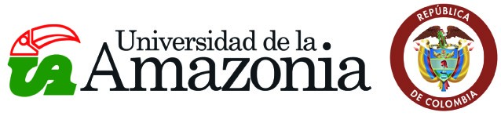
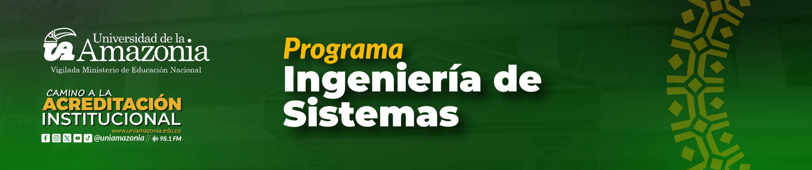
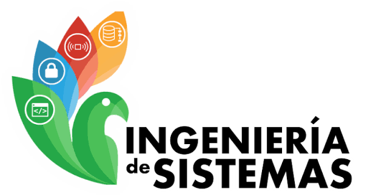

Formamos ingenieros capaces de crear, innovar y aplicar soluciones computacionales apoyadas en las Tecnologías de la Información y la Comunicación, para impulsar el desarrollo de la región amazónica y del país.
Duración
10 semestres
Créditos
178
Modalidad
Presencial
El programa forma profesionales integrales en Ingeniería de Sistemas con un currículo que combina ciencias básicas, ingeniería, formación tecnológica, investigativa, socio-humanista y complementaria. Así, el egresado transforma su entorno mediante soluciones computacionales que aportan al desarrollo económico, social, tecnológico y sostenible de la región amazónica y del país.

Formar profesionales íntegros, capaces de crear, innovar y solucionar problemas organizacionales y productivos mediante sistemas de información, para contribuir al desarrollo social, económico y tecnológico de la región amazónica y del país.
Ser un programa en permanente acreditación académica y social, líder en la formación integral de profesionales competentes en lo académico, investigativo y humanístico, comprometidos con el desarrollo tecnológico de la región.
El Ingeniero de Sistemas comprende las dinámicas de su entorno y reconoce las responsabilidades legales, profesionales, éticas, sociales, económicas y culturales de su profesión. Como su disciplina cambia constantemente, mantiene un aprendizaje autónomo y continuo.
El Departamento de Admisión, Registro y Control Académico publica los requisitos para aspirantes.
Ver requisitosCoordinadora del programa: Paula Andrea Chica Murcia
Teléfono: 320 454 1936
Ubicación: Campus Florencia, barrio El Porvenir, bloque administrativo, primer piso. Florencia, Caquetá.
Correo electrónico: pisistemas@uniamazonia.edu.co
página oficial del programa.